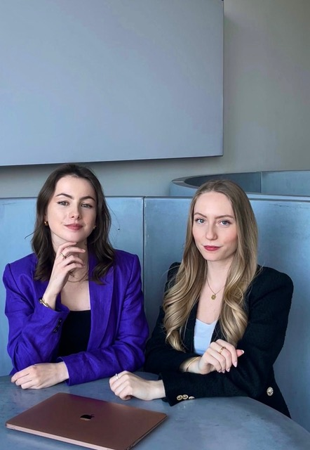

Über Masterpieß
Für alle, die aus Veränderung Wirkung machen.
Masterpieß ist die neue Generation der Change-Beratung – jung, klar, empathisch und mit einem hohen Anspruch an Qualität und Zusammenarbeit.
Wir begleiten Organisationen und ihre Mitarbeitenden in Veränderungsprozessen: strukturiert, nahbar und mit echtem Gestaltungswillen. Ob Kulturarbeit, Coaching, Workshop-Reihen oder der Aufbau von Change Agent Netzwerken – wir machen Veränderung greifbar und fördern eine Haltung, die Wandel nicht blockiert, sondern vorantreibt.
Ein Gefühl von Klarheit, Ermutigung und echter Wirksamkeit. Ein Gefühl, das bleibt.